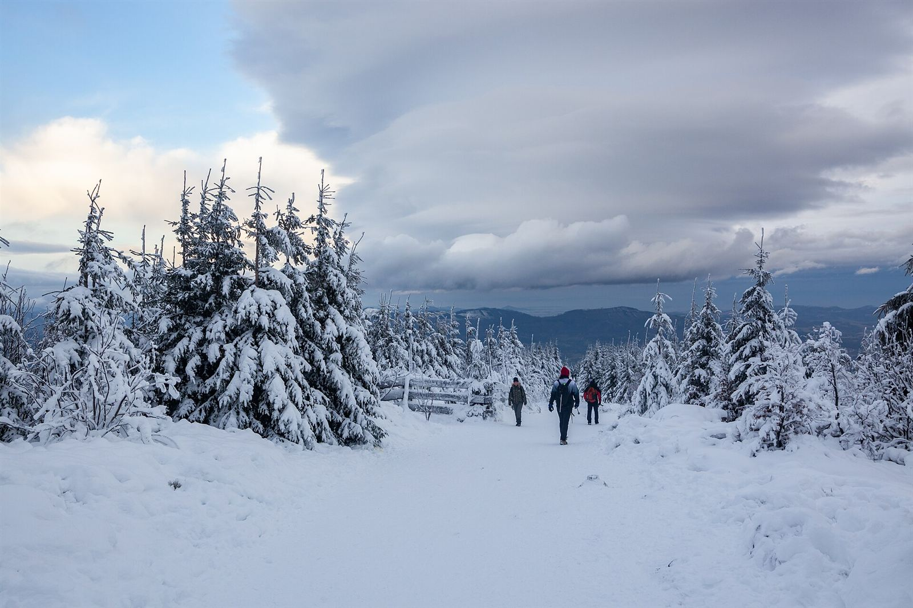
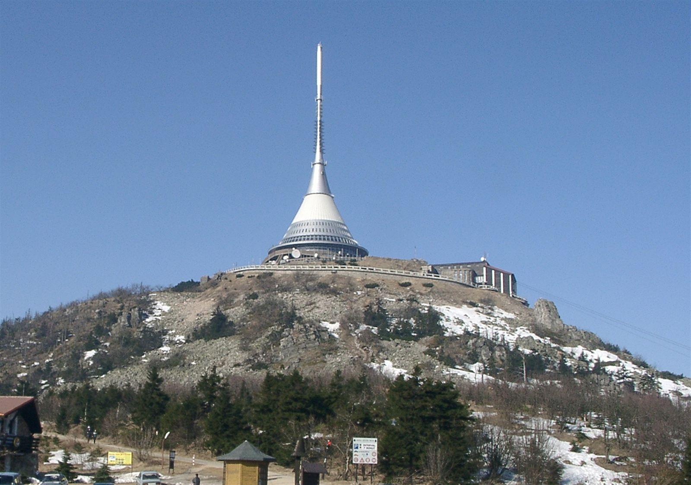

Lysá hora v zimě
Nejvyšší hora Beskyd (1 323 m). Z Ostravice se jde skoro pořád do kopce.

Klínovec v červnu
Nahoře je to skoro rovina, takže dobrá túra na rozchození po zimě.

Beskydy z Radhoště
Inverze nad Beskydami, fotka je od kaple na Radhošti.

Ještěd
Vrchol nad Libercem s hotelem a vysílačem (1 012 m).
Deník z českých hor
Na hory jezdím od března 2024, většinou jednou nebo dvakrát za měsíc. Původně jsem chtěl jen obejít nejvyšší vrcholy jednotlivých pohoří, ale nakonec si zapisuju každou túru. Tenhle web je hlavně můj deník, kam si to ukládám.
Chodím hlavně jednodenní túry, na které se dá dojet vlakem. U každé mám zapsanou trasu, délku, převýšení a jestli bych tam šel znovu. Hodí se mi to, když plánuju další výlet.
Zhruba jednou za měsíc pořádám i společnou túru. Termíny a přihláška jsou na stránce Společné akce.
Poslední túry
20. 9. 2026 · z obce Špindlerův Mlýn Krkonoše
18,0 km Ostrý (1 293 m)
5. 9. 2026 · z obce Železná Ruda Šumava
13,4 km Velký Máj (1 385 m)
22. 8. 2026 · z obce Ramzová Hrubý Jeseník
12,9 km Javorový vrch (1 032 m)
8. 8. 2026 · z obce Třinec Beskydy
11,6 km Zlaté návrší (1 411 m)
25. 7. 2026 · z obce Horní Mísečky Krkonoše
10,3 km
Nejbližší společná akce
so 17. 10. 2026
Jizerské hory
Smědava – Jizera – Bukovec – Jizerka. Zhruba 16 km po modré a žluté, sraz v 8:10 na nádraží v Tanvaldu. Volných míst: 6.